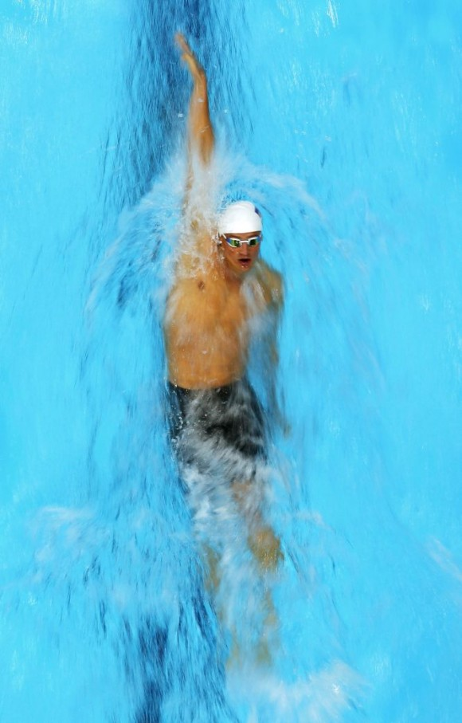
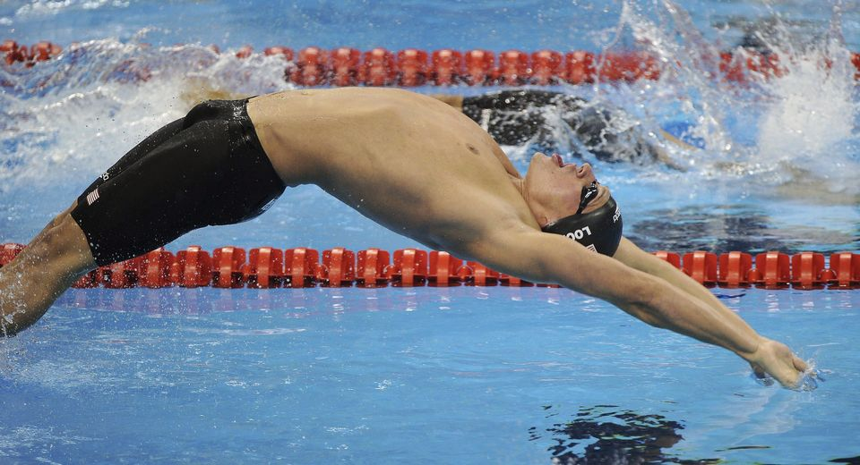

|  | El estilo espalda o dorsal es un estilo de natación. Este estilo es esencialmente crol, sólo que el nadador flota con la espalda en el agua. La secuencia de movimientos es alternativa: un brazo en el aire con la palma de la mano hacia afuera saliendo debajo de la pierna, mientras el otro impulsa el cuerpo en el agua. La espalda es el segundo estilo más lento, después de la braza. La máxima velocidad alcanzada está en torno a los 1.84 metros por segundo. Debido a la posición de espaldas, la espalda hace que se usen diferentes músculos de la parte superior del cuerpo respecto a los que se utilizan en otros estilos como mariposa. En la posición inicial, el nadador está tumbado de espaldas, con los brazos estirados hacia adelante y con las piernas hacia atrás.  |
| Prueba | Récord | Récordwoman | País | Fecha | Lugar |
|---|---|---|---|---|---|
| 50 metros | 27.06 | Zhao | China | 30 de julio de 2009 | Roma, Italia |
| 100 metros | 58.12 | Gemma Spofforth | Reino Unido | 30 de julio de 2009 | Roma, Italia |
| 200 metros | 2:04.06 | Missy Franklin | Estados Unidos | 3 de agosto de 2012 | Londres, Reino Unido |
| Prueba | Récord | Récordman | País | Fecha | Lugar |
|---|---|---|---|---|---|
| 50 metros | 24.04 | Liam Tancock | Reino Unido | 2 de agosto de 2009 | Roma, Italia |
| 100 metros | 51,85 | Ryan Murphy | Estados Unidos | 13 de agosto de 2016 | Río de Janeiro, Brasil |
| 200 metros | 1:51.92 | Aaron Peirsol | Estados Unidos | 31 de julio de 2009 | Roma, Italia |
| Si desea volver a la página principal haz clic aquí |